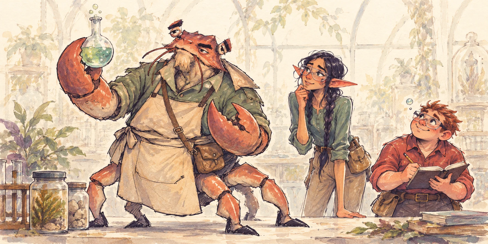

04 / DESIGN
A class should feel
like an invitation.
A teacher with personality, a clear explanation, and a demonstration that makes an idea concrete. Art supports the teaching at each step.

THE TEACHING APPROACH
- 01
Explain
The teacher introduces a subject concept and defines the vocabulary.
- 02
Demonstrate
A worked example or comparison makes the explanation concrete.
- 03
Apply
Students use the concept in observation, analysis or practice.
- 04
Check
An explanation reveals understanding and guides further teaching.
FIRST MUSIC CLASS
Learn to listen.
Learn to describe.
Unit 1.1: Acoustical Awareness & The Anatomy of Sound. The Goblin Bard explains pitch, loudness, duration and timbre, then guides Soundscape Mapping and a comparison of four instruments playing the same note.
Read the example lesson →See the other teachers’ first lessons →
Visual interaction cues
- WHO TO APPROACH
- A clear silhouette, open gesture and unmistakable instrument.
- WHAT TO NOTICE
- Readable vocabulary, focused examples and a clear teaching surface.
- WHAT CHANGED
- Paired sound examples and labeled visual comparisons.
- HOW TO EXPLAIN
- A specific question and enough time to reason through a response.
ACCESS & SCOPE
Accessibility and
prototype scope
Pair voice with text. Let the student replay or mute it. Pair color with symbols. Allow written or spoken explanations and make demonstrations replayable.
The presentation develops one music lesson and outlines the other subject lessons. Classroom scenes and recorded teaching demonstrations are still in development. Learning outcomes need to be evaluated with students.
Built for VR headsets
The final platform is VR headsets, with Meta Quest as the initial target. Being inside the classroom gives the monster teachers a sense of scale and presence, while spatial sound and direct interaction let students explore an idea through movement, listening and hands-on experiments. The headset should make the teaching feel tangible and personal.
Desktop web prototypes let us test lessons and interactions before bringing them into VR. Headset development will include comfortable viewing, seated and standing play, controller input, captions and testing on real devices. These are design goals to validate with students.